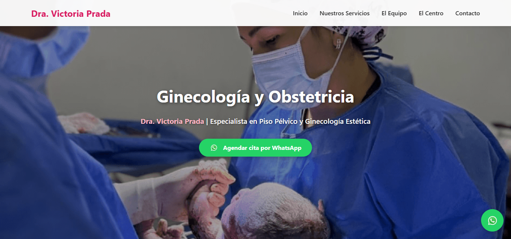
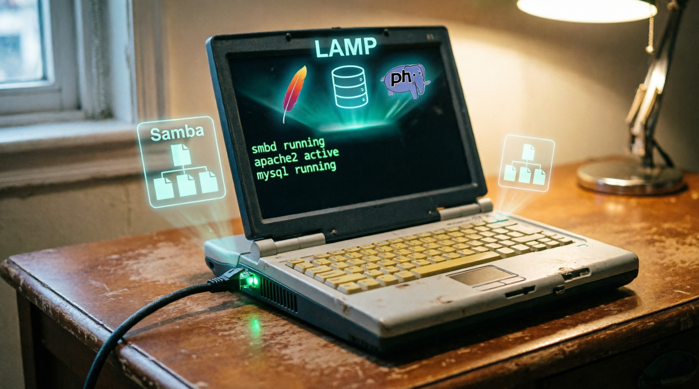

🔒 Privado
🔒 Privado
SindroMerchado
Sistema de supermercado online con 6 microservicios en PHP puro. API Gateway, autenticación por API Key y bases de datos separadas.
Privado
Ver detalles
 ✅ En Producción
✅ En Producción
Sistema de Panadería
CRUD que mi papá usa para calcular costos, ganancias y precios de venta. En uso real todos los días.
Privado
Ver detalles
 🌐 Público
🌐 Público
Beep Jesus Pro v3.0.1
Script en Bash que convierte MIDI a frecuencias para el buzzer de Linux. "La Gata Bajo la Lluvia" al encender mi PC.

✅ En ProducciónDra. Victoria
Sitio web médico con modales, mapa de ubicación y botones de WhatsApp con mensajes predefinidos.
 🖥️ Privado
🖥️ Privado
Guía de Estilos de Diseño
Archivo HTML local con 35 estilos (Glassmorfismo, Dadá, Neumorfismo, etc.), librerías de iconos, tipografías y paletas de colores.
Personal
Ver detalles

🖥️ InfraestructuraServidor Local LAMP + Samba
Servidor con 1GB de RAM configurado con LAMP, Samba, Cockpit. Edito desde Windows, ejecuto en Linux.